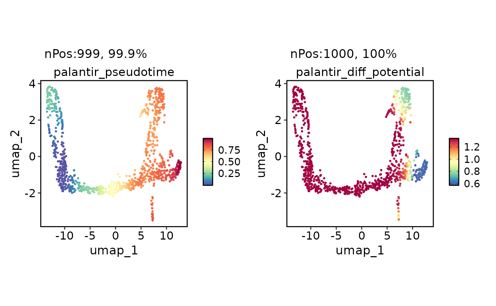
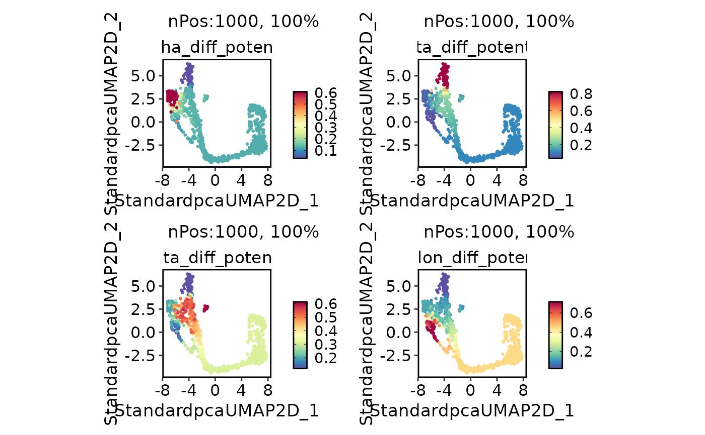

Run Palantir analysis
Usage
RunPalantir(
srt = NULL,
assay_x = "RNA",
layer_x = "counts",
assay_y = c("spliced", "unspliced"),
layer_y = "counts",
adata = NULL,
group_by = NULL,
linear_reduction = NULL,
nonlinear_reduction = NULL,
basis = NULL,
n_pcs = 30,
n_neighbors = 30,
dm_n_components = 10,
dm_alpha = 0,
dm_n_eigs = NULL,
early_group = NULL,
early_cell = NULL,
terminal_cells = NULL,
terminal_groups = NULL,
num_waypoints = 1200,
scale_components = TRUE,
use_early_cell_as_start = TRUE,
adjust_early_cell = FALSE,
adjust_terminal_cells = FALSE,
max_iterations = 25,
n_jobs = 1,
point_size = 20,
palette = "Paired",
palcolor = NULL,
show_plot = TRUE,
save = FALSE,
dpi = 300,
dirpath = "./",
fileprefix = "",
return_seurat = !is.null(srt)
)Arguments
- srt
A Seurat object.
- assay_x
Assay to convert in the anndata object.
- layer_x
Layer name for
assay_xin the Seurat object.- assay_y
Assay to convert in the anndata object.
- layer_y
Layer names for the
assay_yin the Seurat object.- adata
An anndata object.
- group_by
Variable to use for grouping cells in the Seurat object.
- linear_reduction
Linear reduction method to use, e.g.,
"PCA".- nonlinear_reduction
Non-linear reduction method to use, e.g.,
"UMAP".- basis
The basis to use for reduction, e.g.,
"UMAP".- n_pcs
Number of principal components to use for linear reduction. Default is
30.- n_neighbors
Number of neighbors to use for constructing the KNN graph. Default is
30.- dm_n_components
The number of diffusion components to calculate.
- dm_alpha
Normalization parameter for the diffusion operator.
- dm_n_eigs
Number of eigen vectors to use.
- early_group
Name of the group to start Palantir analysis from.
- early_cell
Name of the cell to start Palantir analysis from.
- terminal_cells
Character vector specifying terminal cells for Palantir analysis.
- terminal_groups
Character vector specifying terminal groups for Palantir analysis.
- num_waypoints
Number of waypoints to be included.
- scale_components
Should the cell fate probabilities be scaled for each component independently?
- use_early_cell_as_start
Should the starting cell for each terminal group be set as early_cell?
- adjust_early_cell
Whether to adjust the early cell to the cell with the minimum pseudotime value.
- adjust_terminal_cells
Whether to adjust the terminal cells to the cells with the maximum pseudotime value for each terminal group.
- max_iterations
Maximum number of iterations for pseudotime convergence.
- n_jobs
The number of parallel jobs to run.
- point_size
The point size for plotting.
- palette
The palette to use for coloring cells.
- palcolor
A vector of colors to use as the palette.
- show_plot
Whether to show the plot.
- save
Whether to save the plots.
- dpi
The DPI (dots per inch) for saving the plot.
- dirpath
The directory to save the plots.
- fileprefix
The file prefix to use for the plots.
- return_seurat
Whether to return a Seurat object instead of an anndata object. Default is
TRUE.
Examples
PrepareEnv()
#> ℹ [2025-09-09 15:10:56] Preparing scop Python Environment
#> ℹ [2025-09-09 15:10:56] Environment name: scop_env
#> ℹ [2025-09-09 15:10:56] Python version: 3.10-1
#> ℹ [2025-09-09 15:10:56] Number of packages to install: 21
#> ℹ [2025-09-09 15:10:56] Auto-detecting conda...
#> ℹ [2025-09-09 15:10:57] Using existing environment: /usr/share/miniconda/envs/scop_env
#> ℹ [2025-09-09 15:10:57] Checking and installing required packages...
#> ℹ [2025-09-09 15:10:57] Installing conda packages
#> ℹ [2025-09-09 15:10:59] Checking 3 packages in environment: scop_env
#> ℹ [2025-09-09 15:10:59] Retrieving package list for environment: scop_env
#> ℹ [2025-09-09 15:11:00] Found 141 packages installed
#> ✔ [2025-09-09 15:11:00] leidenalg 0.10.2
#> ✔ [2025-09-09 15:11:00] tbb 2022.2.0
#> ✔ [2025-09-09 15:11:00] python-igraph 0.11.9
#> ℹ [2025-09-09 15:11:00] Installing pip packages
#> ℹ [2025-09-09 15:11:02] Checking 18 packages in environment: scop_env
#> ℹ [2025-09-09 15:11:02] Retrieving package list for environment: scop_env
#> ℹ [2025-09-09 15:11:04] Found 141 packages installed
#> ! [2025-09-09 15:11:04] matplotlib found but version mismatch: installed 3.10.6, required 3.10.3
#> ! [2025-09-09 15:11:04] numba found but version mismatch: installed 0.61.2, required 0.59.1
#> ! [2025-09-09 15:11:04] llvmlite found but version mismatch: installed 0.44.0, required 0.42.0
#> ✔ [2025-09-09 15:11:04] numpy 1.26.4
#> ! [2025-09-09 15:11:04] palantir not found
#> ! [2025-09-09 15:11:04] pandas found but version mismatch: installed 2.3.2, required 2.0.3
#> ! [2025-09-09 15:11:04] scanpy found but version mismatch: installed 1.11.4, required 1.11.3
#> ! [2025-09-09 15:11:04] scikit-learn found but version mismatch: installed 1.7.2, required 1.7.0
#> ✔ [2025-09-09 15:11:04] scipy 1.15.3
#> ✔ [2025-09-09 15:11:04] scvelo 0.3.3
#> ! [2025-09-09 15:11:04] wot not found
#> ! [2025-09-09 15:11:04] trimap not found
#> ! [2025-09-09 15:11:04] pacmap not found
#> ! [2025-09-09 15:11:04] phate not found
#> ! [2025-09-09 15:11:04] bbknn not found
#> ! [2025-09-09 15:11:04] scanorama not found
#> ! [2025-09-09 15:11:04] scvi-tools not found
#> ! [2025-09-09 15:11:04] cellrank not found
#> ℹ [2025-09-09 15:11:04] Try to install: matplotlib==3.10.3, numba==0.59.1, llvmlite==0.42.0, palantir==1.4.1, pandas==2.0.3, scanpy==1.11.3, scikit-learn==1.7.0, wot==1.0.8.post2, trimap==1.1.4, pacmap==0.8.0, phate==1.0.11, bbknn==1.6.0, scanorama==1.7.4, scvi-tools==1.2.1, and cellrank==2.0.7
#> ℹ [2025-09-09 15:11:04] Installing 16 packages into environment: scop_env
#> ℹ [2025-09-09 15:11:05] Installing packages via pip...
#> ℹ [2025-09-09 15:11:15] Checking 18 packages in environment: scop_env
#> ℹ [2025-09-09 15:11:16] Retrieving package list for environment: scop_env
#> ℹ [2025-09-09 15:11:17] Found 141 packages installed
#> ! [2025-09-09 15:11:17] matplotlib found but version mismatch: installed 3.10.6, required 3.10.3
#> ! [2025-09-09 15:11:17] numba found but version mismatch: installed 0.61.2, required 0.59.1
#> ! [2025-09-09 15:11:17] llvmlite found but version mismatch: installed 0.44.0, required 0.42.0
#> ✔ [2025-09-09 15:11:17] numpy 1.26.4
#> ! [2025-09-09 15:11:17] palantir not found
#> ! [2025-09-09 15:11:17] pandas found but version mismatch: installed 2.3.2, required 2.0.3
#> ! [2025-09-09 15:11:17] scanpy found but version mismatch: installed 1.11.4, required 1.11.3
#> ! [2025-09-09 15:11:17] scikit-learn found but version mismatch: installed 1.7.2, required 1.7.0
#> ✔ [2025-09-09 15:11:17] scipy 1.15.3
#> ✔ [2025-09-09 15:11:17] scvelo 0.3.3
#> ! [2025-09-09 15:11:17] wot not found
#> ! [2025-09-09 15:11:17] trimap not found
#> ! [2025-09-09 15:11:17] pacmap not found
#> ! [2025-09-09 15:11:17] phate not found
#> ! [2025-09-09 15:11:17] bbknn not found
#> ! [2025-09-09 15:11:17] scanorama not found
#> ! [2025-09-09 15:11:17] scvi-tools not found
#> ! [2025-09-09 15:11:17] cellrank not found
#> ! [2025-09-09 15:11:17] Failed to install: matplotlib==3.10.3, numba==0.59.1, llvmlite==0.42.0, palantir==1.4.1, pandas==2.0.3, scanpy==1.11.3, scikit-learn==1.7.0, wot==1.0.8.post2, trimap==1.1.4, pacmap==0.8.0, phate==1.0.11, bbknn==1.6.0, scanorama==1.7.4, scvi-tools==1.2.1, and cellrank==2.0.7 into the environment scop_env. Please install manually
#> ✔ [2025-09-09 15:11:19] Python Environment Ready
#> conda environment:
#> conda: /usr/share/miniconda/bin/conda
#> environment: /usr/share/miniconda/envs/scop_env
#> python config:
#> python: /usr/share/miniconda/envs/scop_env/bin/python3.10
#> libpython: /usr/share/miniconda/envs/scop_env/lib/libpython3.10.so
#> pythonhome: /usr/share/miniconda/envs/scop_env:/usr/share/miniconda/envs/scop_env
#> version: 3.10.1 | packaged by conda-forge | (main, Dec 22 2021, 01:39:36) [GCC 9.4.0]
#> numpy: /usr/share/miniconda/envs/scop_env/lib/python3.10/site-packages/numpy
#> numpy_version: 1.26.4
#>
#> NOTE: Python version was forced by use_python() function
data(pancreas_sub)
pancreas_sub <- standard_scop(pancreas_sub)
#> ℹ [2025-09-09 15:11:20] Start standard scop workflow...
#> ℹ [2025-09-09 15:11:21] Checking a list of <Seurat> objects...
#> ! [2025-09-09 15:11:21] Data 1/1 of the `srt_list` is "unknown"
#> ℹ [2025-09-09 15:11:21] Perform `NormalizeData()` with `normalization.method = 'LogNormalize'` on the data 1/1 of the `srt_list`...
#> ℹ [2025-09-09 15:11:23] Perform `Seurat::FindVariableFeatures()` on the data 1/1 of the `srt_list`...
#> ℹ [2025-09-09 15:11:24] Use the separate HVF from srt_list
#> ℹ [2025-09-09 15:11:24] Number of available HVF: 2000
#> ℹ [2025-09-09 15:11:24] Finished check
#> ℹ [2025-09-09 15:11:25] Perform `Seurat::ScaleData()` on the data...
#> Warning: Different features in new layer data than already exists for scale.data
#> ℹ [2025-09-09 15:11:25] Perform pca linear dimension reduction on the data...
#> StandardPC_ 1
#> Positive: Aplp1, Cpe, Gnas, Fam183b, Map1b, Hmgn3, Pcsk1n, Chga, Tuba1a, Bex2
#> Syt13, Isl1, 1700086L19Rik, Pax6, Chgb, Scgn, Rbp4, Scg3, Gch1, Camk2n1
#> Cryba2, Pcsk2, Pyy, Tspan7, Mafb, Hist3h2ba, Dbpht2, Abcc8, Rap1b, Slc38a5
#> Negative: Spp1, Anxa2, Sparc, Dbi, 1700011H14Rik, Wfdc2, Gsta3, Adamts1, Clu, Mgst1
#> Bicc1, Ldha, Vim, Cldn3, Cyr61, Rps2, Mt1, Ptn, Phgdh, Nudt19
#> Smtnl2, Smco4, Habp2, Mt2, Col18a1, Rpl12, Galk1, Cldn10, Acot1, Ccnd1
#> StandardPC_ 2
#> Positive: Rbp4, Tagln2, Tuba1b, Fkbp2, Pyy, Pcsk2, Iapp, Tmem27, Meis2, Tubb4b
#> Pcsk1n, Dbpht2, Rap1b, Dynll1, Tubb2a, Sdf2l1, Scgn, 1700086L19Rik, Scg2, Abcc8
#> Atp1b1, Hspa5, Fam183b, Papss2, Slc38a5, Scg3, Mageh1, Tspan7, Ppp1r1a, Ociad2
#> Negative: Neurog3, Btbd17, Gadd45a, Ppp1r14a, Neurod2, Sox4, Smarcd2, Mdk, Pax4, Btg2
#> Sult2b1, Hes6, Grasp, Igfbpl1, Gpx2, Cbfa2t3, Foxa3, Shf, Mfng, Tmsb4x
#> Amotl2, Gdpd1, Cdc14b, Epb42, Rcor2, Cotl1, Upk3bl, Rbfox3, Cldn6, Cer1
#> StandardPC_ 3
#> Positive: Nusap1, Top2a, Birc5, Aurkb, Cdca8, Pbk, Mki67, Tpx2, Plk1, Ccnb1
#> 2810417H13Rik, Incenp, Cenpf, Ccna2, Prc1, Racgap1, Cdk1, Aurka, Cdca3, Hmmr
#> Spc24, Kif23, Sgol1, Cenpe, Cdc20, Hist1h1b, Cdca2, Mxd3, Kif22, Ska1
#> Negative: Anxa5, Pdzk1ip1, Acot1, Tpm1, Anxa2, Dcdc2a, Capg, Sparc, Ttr, Pamr1
#> Clu, Cxcl12, Ndrg2, Hnf1aos1, Gas6, Gsta3, Krt18, Ces1d, Atp1b1, Muc1
#> Hhex, Acadm, Spp1, Enpp2, Bcl2l14, Sat1, Smtnl2, 1700011H14Rik, Tgm2, Fam159a
#> StandardPC_ 4
#> Positive: Glud1, Tm4sf4, Akr1c19, Cldn4, Runx1t1, Fev, Pou3f4, Gm43861, Pgrmc1, Arx
#> Cd200, Lrpprc, Hmgn3, Ppp1r14c, Pam, Etv1, Tsc22d1, Slc25a5, Akap17b, Pgf
#> Fam43a, Emb, Jun, Krt8, Dnajc12, Mid1ip1, Ids, Rgs17, Uchl1, Alcam
#> Negative: Ins2, Ins1, Ppp1r1a, Nnat, Calr, Sytl4, Sdf2l1, Iapp, Pdia6, Mapt
#> G6pc2, C2cd4b, Npy, Gng12, P2ry1, Ero1lb, Adra2a, Papss2, Arhgap36, Fam151a
#> Dlk1, Creld2, Gip, Tmem215, Gm27033, Cntfr, Prss53, C2cd4a, Lyve1, Ociad2
#> StandardPC_ 5
#> Positive: Pdx1, Nkx6-1, Npepl1, Cldn4, Cryba2, Fev, Jun, Chgb, Gng12, Adra2a
#> Mnx1, Sytl4, Pdk3, Gm27033, Nnat, Chga, Ins2, 1110012L19Rik, Enho, Krt7
#> Mlxipl, Tmsb10, Flrt1, Pax4, Tubb3, Prrg2, Gars, Frzb, BC023829, Gm2694
#> Negative: Irx2, Irx1, Gcg, Ctxn2, Tmem27, Ctsz, Tmsb15l, Nap1l5, Pou6f2, Gria2
#> Ghrl, Peg10, Smarca1, Arx, Lrpap1, Rgs4, Ttr, Gast, Tmsb15b2, Serpina1b
#> Slc16a10, Wnk3, Ly6e, Auts2, Sct, Arg1, Dusp10, Sphkap, Dock11, Edn3
#> ℹ [2025-09-09 15:11:26] Perform `Seurat::FindClusters()` with louvain and `cluster_resolution` = 0.6 on the data...
#> ℹ [2025-09-09 15:11:26] Reorder clusters...
#> ! [2025-09-09 15:11:26] Using `Seurat::AggregateExpression()` to calculate pseudo-bulk data for <Assay5>
#> ℹ [2025-09-09 15:11:26] Perform umap nonlinear dimension reduction on the data...
#> ℹ [2025-09-09 15:11:26] Non-linear dimensionality reduction (umap) using (Standardpca) dims (1-50) as input
#> ℹ [2025-09-09 15:11:31] Non-linear dimensionality reduction (umap) using (Standardpca) dims (1-50) as input
#> ✔ [2025-09-09 15:11:36] Run scop standard workflow done
pancreas_sub <- RunPalantir(
pancreas_sub,
group_by = "SubCellType",
linear_reduction = "PCA",
nonlinear_reduction = "UMAP",
early_group = "Ductal",
use_early_cell_as_start = TRUE,
terminal_groups = c("Alpha", "Beta", "Delta", "Epsilon")
)
#> ℹ [2025-09-09 15:11:37] Checking 1 packages in environment: scop_env
#> ℹ [2025-09-09 15:11:38] Retrieving package list for environment: scop_env
#> ℹ [2025-09-09 15:11:39] Found 141 packages installed
#> ! [2025-09-09 15:11:39] palantir not found
#> ℹ [2025-09-09 15:11:39] Try to install: palantir
#> ℹ [2025-09-09 15:11:39] Installing 2 packages into environment: scop_env
#> ℹ [2025-09-09 15:11:40] Installing packages via pip...
#> ✔ [2025-09-09 15:11:45] pip installation completed
#> ℹ [2025-09-09 15:11:46] Checking 1 packages in environment: scop_env
#> ℹ [2025-09-09 15:11:47] Retrieving package list for environment: scop_env
#> ℹ [2025-09-09 15:11:48] Found 147 packages installed
#> ✔ [2025-09-09 15:11:48] palantir version: 1.4.1
#> ℹ [2025-09-09 15:11:49] Checking 2 packages in environment: scop_env
#> ℹ [2025-09-09 15:11:50] Retrieving package list for environment: scop_env
#> ℹ [2025-09-09 15:11:51] Found 147 packages installed
#> ✔ [2025-09-09 15:11:51] scanpy version: 1.11.4
#> ✔ [2025-09-09 15:11:51] numpy version: 1.26.4
#> ℹ [2025-09-09 15:11:51] Converting <Seurat> object to <AnnData> object...
#> ! [2025-09-09 15:11:52] "misc" slot is not converted
#> ! [2025-09-09 15:11:52] "tools" slot is not converted
#> ✔ [2025-09-09 15:11:52] Convert <Seurat> object to <AnnData> object completed
#> ℹ [2025-09-09 15:11:55] Converting <AnnData> object to <Seurat> object...
#> ✔ [2025-09-09 15:11:56] Convert <AnnData> object to <Seurat> object completed
head(pancreas_sub[[]])
#> orig.ident nCount_RNA nFeature_RNA S_score G2M_score
#> AAACCTGAGCCTTGAT SeuratProject 7071 2613 -0.01470664 -0.2326104
#> AAACCTGGTAAGTGGC SeuratProject 5026 2211 -0.17998111 -0.1260295
#> AAACGGGAGATATGGT SeuratProject 6194 2486 -0.16794573 -0.1666881
#> AAACGGGCAAAGAATC SeuratProject 6370 2581 -0.17434505 -0.2216024
#> AAACGGGGTACAGTTC SeuratProject 9182 2906 -0.18656224 -0.1571970
#> AAACGGGTCAGCTCTC SeuratProject 5892 2282 -0.12347911 -0.2298337
#> nCount_spliced nFeature_spliced nCount_unspliced
#> AAACCTGAGCCTTGAT 7071 2613 953
#> AAACCTGGTAAGTGGC 5026 2211 1000
#> AAACGGGAGATATGGT 6194 2486 721
#> AAACGGGCAAAGAATC 6370 2581 1544
#> AAACGGGGTACAGTTC 9182 2906 2262
#> AAACGGGTCAGCTCTC 5892 2282 935
#> nFeature_unspliced CellType SubCellType Phase
#> AAACCTGAGCCTTGAT 638 Ductal Ductal G1
#> AAACCTGGTAAGTGGC 623 Ngn3-high-EP Ngn3-high-EP G1
#> AAACGGGAGATATGGT 550 Ductal Ductal G1
#> AAACGGGCAAAGAATC 1015 Endocrine Beta G1
#> AAACGGGGTACAGTTC 1096 Endocrine Beta G1
#> AAACGGGTCAGCTCTC 712 Ngn3-low-EP Ngn3-low-EP G1
#> Standardpca_SNN_res.0.6 ident Standardpcaclusters
#> AAACCTGAGCCTTGAT 0 <NA> <NA>
#> AAACCTGGTAAGTGGC 3 <NA> <NA>
#> AAACGGGAGATATGGT 0 <NA> <NA>
#> AAACGGGCAAAGAATC 1 <NA> <NA>
#> AAACGGGGTACAGTTC 1 <NA> <NA>
#> AAACGGGTCAGCTCTC 0 <NA> <NA>
#> Standardclusters palantir_pseudotime palantir_diff_potential
#> AAACCTGAGCCTTGAT <NA> 0.02301488 1.2382715
#> AAACCTGGTAAGTGGC <NA> 0.58683276 1.2445912
#> AAACGGGAGATATGGT <NA> 0.01140436 1.2382715
#> AAACGGGCAAAGAATC <NA> 0.82562044 1.1998531
#> AAACGGGGTACAGTTC <NA> 0.95845615 0.6209265
#> AAACGGGTCAGCTCTC <NA> 0.02476972 1.2382715
#> Alpha_diff_potential Epsilon_diff_potential
#> AAACCTGAGCCTTGAT 0.12689279 0.44567120
#> AAACCTGGTAAGTGGC 0.12716357 0.43656871
#> AAACGGGAGATATGGT 0.12689279 0.44567120
#> AAACGGGCAAAGAATC 0.12787290 0.11334907
#> AAACGGGGTACAGTTC 0.03188425 0.02583421
#> AAACGGGTCAGCTCTC 0.12689279 0.44567120
#> Delta_diff_potential Beta_diff_potential
#> AAACCTGAGCCTTGAT 0.3084041 0.1190319
#> AAACCTGGTAAGTGGC 0.3141743 0.1220934
#> AAACGGGAGATATGGT 0.3084041 0.1190319
#> AAACGGGCAAAGAATC 0.5092212 0.2495568
#> AAACGGGGTACAGTTC 0.1206682 0.8216133
#> AAACGGGTCAGCTCTC 0.3084041 0.1190319
FeatureDimPlot(
pancreas_sub,
c("palantir_pseudotime", "palantir_diff_potential")
)

FeatureDimPlot(
pancreas_sub,
paste0(
c("Alpha", "Beta", "Delta", "Epsilon"),
"_diff_potential"
)
)
